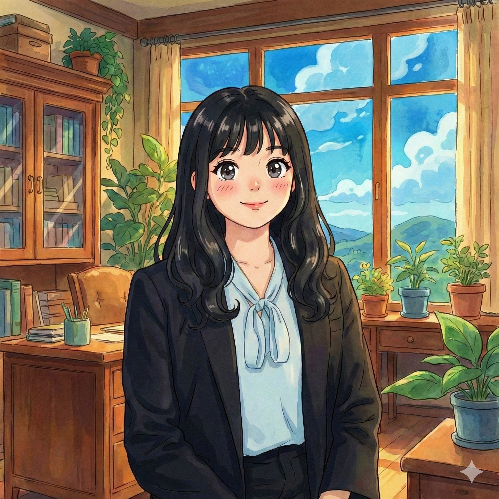

About Me
Engineer at heart. Builder by nature. Endlessly curious.

Jane Wang
MBA Candidate, Wharton '27
Quick Facts
- Wharton MBA '27 (Finance & Operations)
- Harvard Kennedy School MPP (Fall '26)
- Former Software Engineer at Google
- USC Computer Science BS + MS
- Fluent in Mandarin
Hello!
I'm Jane — a builder, thinker, and someone who has never been able to pick just one thing. I grew up in Southern California and have spent my career moving between engineering, strategy, and the messy, exciting spaces in between. This website is my attempt to share a bit of that journey with you.
My Journey
2017 - 2022 | USC
I landed at the University of Southern California at 17, wide-eyed and determined to figure out how things work. I fell in love with computer science — not just the logic of it, but the feeling of building something from nothing. I stayed for a combined BS and MS, and along the way helped run Trojan Consulting Group, where I got my first taste of strategy work advising on market analysis for companies like SpaceX's Starlink. Those years taught me how to think in systems, move fast, and work with people who challenge you.
2022 - 2025 | Google
After graduating, I joined Google as a software engineer on the Connected TV ads team. What started as writing code quickly turned into something much bigger — I ended up leading cross-functional projects that spanned engineering, product, and sales teams across multiple offices. One of my proudest moments was spearheading a CTV initiative that drove a meaningful revenue increase. But beyond the numbers, I cared most about the people. I built mentorship and onboarding programs for over 80 new grad employees, because I remembered what it felt like to be new and want someone in your corner. After three incredible years, I felt a pull toward something different — I wanted to understand the business side of technology, not just build it.
2025 | Pivoting into Finance & Policy
The summer before Wharton, I dove headfirst into the world of finance. At the State of Connecticut Treasurer's Office, I helped analyze private markets for the state's pension fund — and I even built an AI tool that cut manual review time by hours. At United Generations Capital, I'm getting hands-on experience in private equity, supporting deal evaluation and advising portfolio companies on how to integrate AI into their operations. These experiences have shown me that the best solutions live at the intersection of technology, business, and thoughtful policy.
2025 - Present | Wharton
Now I'm at Wharton pursuing my MBA with a major in Finance and Operations & Marketing. I'm part of the General Management Club, Marketing Club, Real Estate Club, and the ETA Club — because, true to form, I can't pick just one thing. The Wharton community has been an incredible space to stretch my thinking and connect with people who are just as restless and ambitious.
Fall 2026 | What's Next — Harvard Kennedy School
I'm thrilled to share that I was recently admitted to the Harvard Kennedy School of Public Policy, which I'll be starting this coming fall. It's a chance to explore the policy dimensions of the questions I care about most — how technology shapes communities, how capital flows can be more equitable, and how we build systems that actually work for people. I can't wait to see where this next chapter takes me.
Skills & Toolkit
A mix of the technical and the strategic:
What Drives Me
Curiosity
I've never been able to stay in one lane — and I've stopped trying to. The best ideas come from connecting dots across fields.
Impact
Whether it's mentoring new grads or building AI tools for pension funds, I want the work I do to make things better for real people.
Community
I thrive in communities. Building them, showing up for them, and learning from the people around me.
Adventure
From paragliding to pottery class, I believe in saying yes to things that scare you a little.
Beyond Work
When I'm not in class or crunching numbers, you'll find me on the tennis court, trying a new recipe, shaping something on a pottery wheel, or planning my next trip. I sing acapella pop renditions for fun, I'm a beginner golfer who loses a lot of balls, and I have strong opinions about EDM festival logistics.
Want to know more? Check out my hobbies page!
Let's Connect!
I'm always happy to chat — whether it's about a project, an idea, or just to say hi.